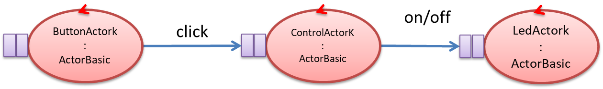
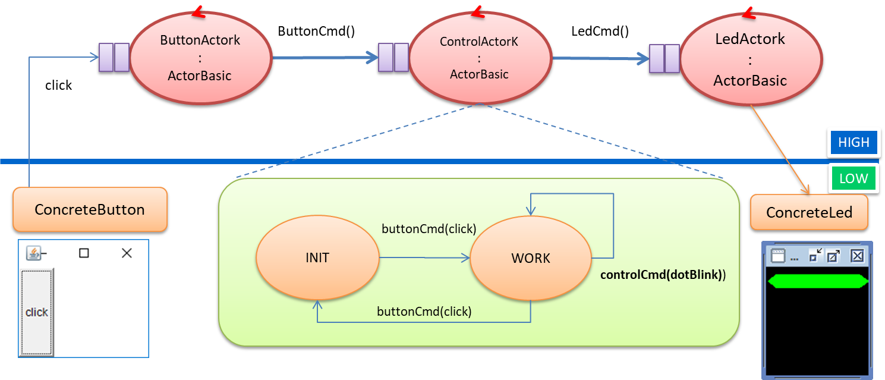

72939 - LAB5 | From objects to actors
LabISS-lectures siteREQUIREMENTS
With reference to the system introduced in Lab3.html, re-design the system by using
Kotlin actors.
Each actor should be structured as a Finite State Machine (FSM ).
Each actor should be structured as a Finite State Machine (
RESOURCES
abstract class ActorBasic( val name: String,
val channelSize : Int = 10, val confined : Boolean = false ){
val actor =
GlobalScope.actor |
 The application designer must write the |
abstract class ActorBasic( val name: String,
val channelSize : Int = 10, val confined : Boolean = false ){
...
suspend fun autoMsg( msg : ApplMessage) {
println("ActorBasic $name | autoMsg $msg ")
actor.send( msg )
}
suspend fun forward(
msgId : String, msg: String, destActor: ActorBasic) {
destActor.actor.send(
MsgUtil.buildDispatch(name,msgId,msg,destActor.name))
}
}
|
Built-in message-operationsautoMsg: a built-in operation that allows an ActorBasic object to send an to itself.forward: a built-in operation that allows an ActorBasic object to send an ApplMessage to another ActorBasic object. |
msg( MSGID: String, //Identifier of the message MSGTYPE: String, //Type of the message SENDER: String, //Name of the sender ActorBasic object RECEIVER: String, //Name of the receiver ActorBasic object CONTENT: String, //Content of the message SEQNUM: String //Unique Integer number ) |
Application messagesAn ApplMessage (ApplMessage.kt) is represented by the String shown on the left. For example:msg( "alarm", "dispatch", "temperatureSensor", "control", "alarm(fire)", "1" ) |
enum class ApplMessageType{
dispatch,
request,
invitation
}
|
Message typesFrom the point of view of an application designer, we can distinguish among different types:
|
object MsgUtil {
var count = 1;
fun buildDispatch( actor: String,
msgId : String , content :
String, dest: String ) : ApplMessage {
return ApplMessage(msgId,
ApplMessageType.dispatch.toString(),
actor, dest, "$content", "${count++}")
}
suspend fun sendMsg(msgId: String, msg: String,
destActor: ActorBasic) {
val msg = buildDispatch("any", msgId, msg, destActor.name)
destActor.actor.send(msg)
}
...
}
|
Message utilitiesThe singleton object MsgUtil provides operations to build an ApplMessageThe function sendMsg sends a dispatch to a given actor. Other operations of the singleton object MsgUtil can be found in MsgUtil.kt. |
SYSTEM ARCHITECTURE
- Structure: the system is composed of three actors
 - Interaction: at the moment the actors interact by using dispatch-messages of type ApplMessage.
The field
msgContent within an ApplMessage is a generic String. However, the content of a message can should be related to some specific application-message class define by software designer.
Since each actor basically works in amessage-driven way, a sealed class is the most appropriate way to define the content of our ApplMessage.sealed class BlsCmds( val cmd: String, val id : String ="blsCmd" ){ override fun toString() : String{ return "$id(${cmd})" } class LedCmd( cmd : String ) : BlsCmds(cmd, id=LedCmd.id){ companion object{ val id = "ledCmd" } } class ButtonCmd : BlsCmds( "click", id=ButtonCmd.id){ companion object{ val id = "buttonCmd" } } class ControlCmd(cmd:String):BlsCmds(cmd,id=ControlCmd.id){ companion object{ val id = "controlCmd" } } }The sealed class BlsCmd defines classes used to define the structure of the CONTENT argument of the ApplMessage.msg( MSGID, MSGTYPE, SENDER, RECEIVER, CONTENT, SEQNUM )
EXAMPLES
buttonCmd(click) controlCmd(dotBlink) ledCmd(on)
- Behavior
 MainBlsActork.kt
SystemKb.ktThe Main creates the system components by giving a name to each of them:
"button" : for the ButtonActork.kt"led" : for the LedActork.kt"control" : for the ControlActork.kt
Moreover, it uses a static Map<String, ActorBasic> namedblsActorMap defined in a singleton SystemKb.kt to keep track of the actors that compose the system.ButtonActork.kt The Button actor waits for a "click" dispatch sent by a concrete button. Then, it forwards an ApplMessage (with content aBlsCmds.ButtonCmd() object) to the actor named"control" .
The concrete button is an observable GUI object created by the button actor itself. The observer added to the observable GUI is a locally created object, able to send to the "click" message to the button actor.ControlActork.kt The Control actor waits for a BlsCmds.ButtonCmd() dispatch and implements the business logic by working as a Finite State Machine.
In the stateWORK , the control forwards to the actor named"led" an ApplMessage with content aBlsCmds.LedCmd() object, so that the led does one blink. Afterwards, it sends to itself the dispatchBlsCmds.ButtonCmd() , in order to assure a proactive/reactive behavior,LedActork.kt The Led actor waits for a BlsCmds.LedCmd() dispatch and executes the command.
The object Map<String, ActorBasic> introduced in SystemKb.kt
allows us to get (the reference to) an actor by knowing the (unique) name of the actor.
In this way we could send messages to an actor, by only specifying its name, without knowing any 'technological detail' about the implementation of the actors.
In this way we could send messages to an actor, by only specifying its name, without knowing any 'technological detail' about the implementation of the actors.